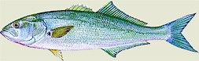
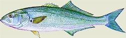
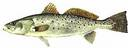

Hallelujah Charters
Serving the Outer Banks, Rodanthe,Waves,Salvo,Avon,Buxton,Frisco,Hatteras
Captain Doug Martin
Fishing out of Teach's Lair Marina
P.O. Box 305
Frisco, NC 27936
Home: (252) 995-5643
Marina: (252) 986-2460
Cell: (252) 475-0625
 |
Fishing Report
What You'll Catch
Photo Gallery
About the Boat
About The Captain
Customer Testimonials
Book A Charter
Recipes
Face Book Hallelujah Charters


What to Bring
1. Food
2. Beverages
3. Sunscreen
4. Camera
5. Small Cooler
6. Jacket
DISTANCES TO HATTERAS
New York, NY = 495 miles (10hrs)
Wash., DC = 340 miles (6.5hrs)
Richmond, VA = 240 miles (5hrs)
Rocky Mt., NC = 202 miles (4.5hrs)
Greenville, NC = 191 miles (4.5hrs)
Norfolk, VA = 130 miles (3hrs) *
Raleigh, NC = 255 miles (5.5hrs) *
Charleston, SC = 523 miles (10hrs)
* indicates nearest airports

|
Welcome!
|
Mid April - Mid May
   
You can expect to catch Big Red Drum, Bluefish, Flounder and Gray Trout.
|
Mid May - End of June
  
Big Red Drum start to fade out and Cobia & Spanish Mackerel come into view in addition to the Bluefish, Speckled Trout and Flounder already in the area. Smaller Red Drum replace the larger variety.
|
July through September

The hot months bring good numbers of Gray Trout, Speckled Trout, Bluefish, Flounder and Red Drum. The larger Red Drum show up in August,September.
|
October through November

The fall months are plentiful with good sized Gray Trout, Speckled Trout, Flounder, Bluefish and Red Drum.
|
December through January

The winter is an exciting time for inshore fishing. Stripers, otherwise known as Rockfish, are heavy in the area. It is not unusual to catch an 18-30lb Rockfish!
 |
|
|
{kind=link}
{kind=link}